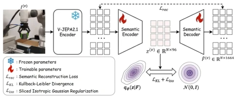
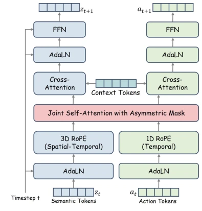
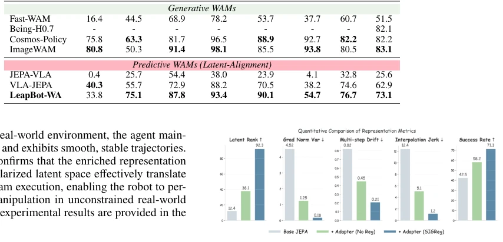

现有世界动作模型（WAMs）大多继承了视频生成的思路，强迫模型去预测未来帧的像素细节（Wang et al. 2024b, 2026b）。这对机器人控制来说是巨大的资源浪费，因为动作策略不需要知道背景纹理或光照变化，只需要理解物理动态。这种像素级重建导致模型对视觉干扰极度敏感，泛化能力差（Gupta et al. 2024; Yang, Finn, and Sadigh 2025）。虽然有些工作尝试进入潜在空间（Yuan et al. 2026b; Luo et al. 2026b），但直接注入非高斯的预测特征到扩散模型中，会导致分布不匹配（Zhang et al. 2025a），引发流匹配不稳定。此外，现有框架往往将世界建模与策略执行强耦合，推理时仍需生成分支，增加了延迟且易受域偏移影响。因此，亟需一种能解耦物理动态预测与视觉渲染的范式，同时解决潜在空间分布对齐的难题。
Figure 1: Overview of LeapBot-WA. Visual observations are processed by a Predictive Anchor (fine-tuned JEPA) and com- pressed by an ISAE into a diffusion-friendly latent space. During joint flow-matching, an Asymmetric MoT decouples world modeling from policy execution. The Anchor DiT predicts semantic evolution and distills these dynamics into the Action DiT via asymmetric masked attention. Crucially, this heavy dynamics branch is omitted at inference for zero-overhead execution.

Figure 2: Architecture of the ISAE. The semantic autoen- coder compresses and reconstructs frozen JEPA features to preserve predictive structures, while the joint regularization (LKL + Liso) reshapes the non-Gaussian posterior into an isotropic Gaussian prior, allowing these semantic represen- tations to be seamlessly integrated into downstream diffusion models.

Figure 3: Asymmetric MoT denoising. The Anchor DiT is prevented from attending to action tokens, while the Ac- tion DiT attends to both action and semantic representations through asymmetric masked attention.
Figure 4: Real-world robot experiments. The UR5 robot demonstrates successful pick-and-place manipulation across diverse objects and containers.

Figure 5: Ablation on Latent Space Regularization. We evaluate the impact of SIGReg on latent geometry and world- model stability. SIGReg effectively prevents dimensional col- lapse (higher Latent Rank), mitigates long-horizon predic- tion errors (lower Multi-step Drift), and smooths the latent manifold (lower Interpolation Jerk), ultimately leading to the highest downstream success rate.